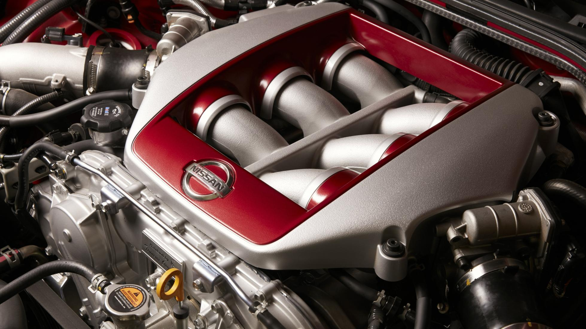
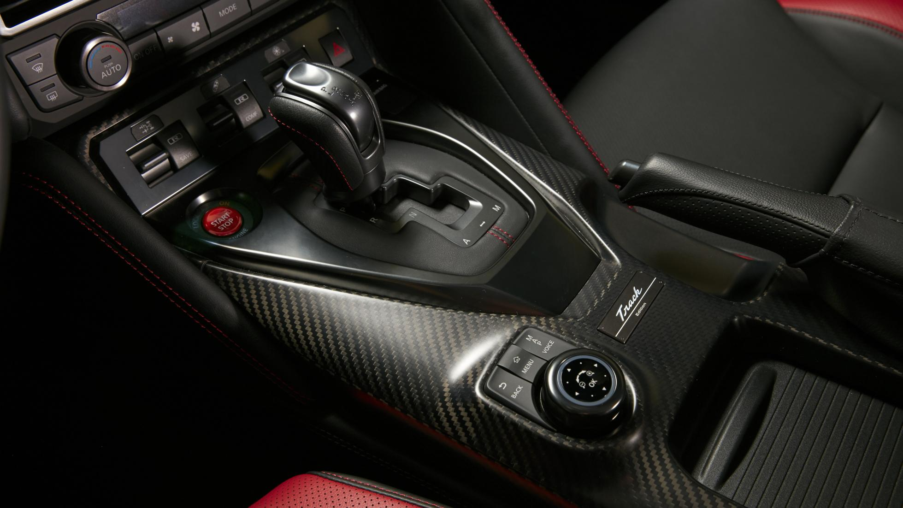

At last year’s New York Auto Show, Nissan unveiled the most significant facelift of the R35 to date.
With more power, new looks and a different interior, 2017’s Godzilla had a little more life injected into it thanks to a softer, more premium outlook. For this year’s New York Auto Show, Nissan has put the harshness back in, keeping the R35 alive even longer. Until an entirely new generation GT-R arrives… at some point in the future.
Anyway, this one’s called the Track Edition, and is a tough game of spot-the-difference for Skyline enthusiasts. Yes, it still delivers 562bhp at 6,800 rpm, and 469lb ft of torque, so there’s no change to the 3.8-litre twin-turbo V6 attached to that brutally effective four-wheel-drive system and dual-clutch gearbox. A shame when there’s the 600bhp Nismo to pinch parts from. But there have been a few Nismo hand-me-downs.

Anyway, this one’s called the Track Edition, and is a tough game of spot-the-difference for Skyline enthusiasts. Yes, it still delivers 562bhp at 6,800 rpm, and 469lb ft of torque, so there’s no change to the 3.8-litre twin-turbo V6 attached to that brutally effective four-wheel-drive system and dual-clutch gearbox. A shame when there’s the 600bhp Nismo to pinch parts from. But there have been a few Nismo hand-me-downs.

Share this page:
Kurzdor | 14/04/2017


Thanks for helping us!